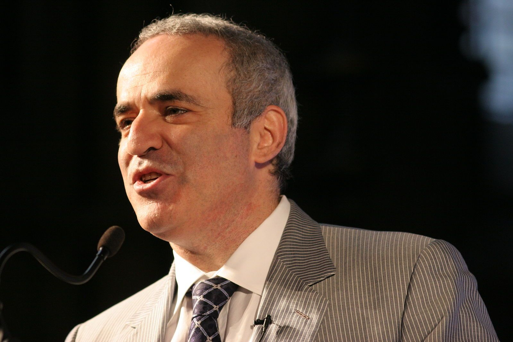

世界國際象棋錦標賽（英語：World Chess Championship）是決定西洋棋世界冠軍的賽事，無論男或女都可以競爭這項榮譽。於1886年開始，兩位最先開始的選手在世界比賽同一組較勁時，官方的世界西洋棋冠軍賽成了大家都想要的榮譽。
當兩個國際級的玩家於1886年時參加了正式的世界冠軍賽，此比賽開始被普遍地重視了。 從1886年到1946年，冠軍賽被定了一個非官方的規定，挑戰者必須擊敗現任冠軍才能成為新的世界冠軍。從1948年到1993年，冠軍賽是由國際棋聯（FIDE）舉辦的。西洋棋界權威卡斯帕羅夫於1993年時脫離了FIDE，創立另一個旗鼓相當的冠軍賽。這個情況直到2006年名稱被統一為世界盃西洋棋冠軍賽為止。
知名職業棋士:
加里·卡斯帕羅夫
特級大師 加里·卡斯帕羅夫是第 13 位世界冠軍，並從 1985 年到 2000 年一直保持這一頭銜。他於 1984 年首次登上世界排名第一的位置，除了幾次例外，直到 2006 年一直是世界排名第一的棋手。卡斯帕羅夫稱霸國際象棋界超過 20 年。

馬格努斯·卡爾森
特級大師馬格努斯·卡爾森是唯一一位在所有時間控制（標準、快速和超快）中都獲得世界冠軍的棋手——他在 2019 年同時獲得了這三個冠軍。 2009 年，他成為歷史上達到 2800 等級分門檻的最年輕棋手，2014 年 4 月 21 日，他的等級分達到了巔峰，也是有史以來的最高等級分2889。

鮑比·菲舍爾
特級大師 鮑比費雪是第 11 位正式世界冠軍，也是第一位也是唯一一位美國世界冠軍。許多人認為他是有史以來最著名的棋手。從 1970 年到 1971 年，菲舍爾在與世界級對手的比賽中連續 20 場獲勝，這是前所未有、令人難以置信的成就，很可能永遠無法超越。這項壯舉被列為七項最令人驚嘆的國際象棋記錄之一。
何塞·勞爾·卡帕布蘭卡
何塞·勞爾·卡帕布蘭卡是第三位正式的世界冠軍，也可能是有史以來最有天賦的國際象棋選手。從 1916 年到 1924 年，他在比賽中創下了 40 勝 23 平的紀錄，這在當時是一個前所未有的壯舉，至今仍是一項具有歷史意義的成就。在這八年間，卡帕布蘭卡的才華和技巧無人能及。
阿納托利·卡爾波夫
特級大師 阿納托利·卡爾波夫是第 12 任世界冠軍，從 1975 年到 1985 年一直稱霸，同時也從 1993 年到 1999 年擔任國際棋聯世界冠軍。卡爾波夫是一位非常全面的棋手，但他的專長是位置束縛、預防性打法和精彩的殘局技術。